Authors: Daniela Gottesman, Gal Yona, Ori Ram, Zorik Gekhman, Jonathan Herzig, Mor Geva, +1 more · ETH, Google DeepMind, Tel Aviv University
Published: 2026-11-11 · Category: cs.MA
Citation: arXiv:2611.15754v1 · PDF · abstract page
MULTILOOP Boosts Complex Information-Seeking Accuracy by 4.6% via Automated Multi-Agent Harness Evolution
1. What It Is & Why It Matters
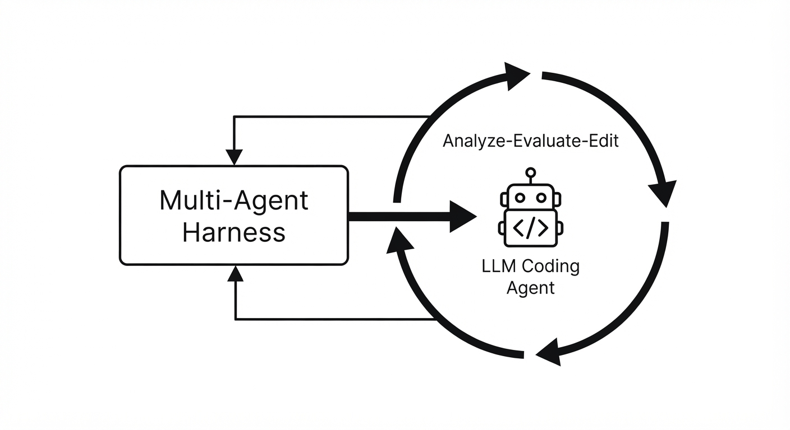
The performance of an LLM-based agent is defined by its "harness"—the orchestration logic, tool definitions, and prompt templates that govern its behavior. While single-agent optimization (like prompt tuning) is maturing, multi-agent systems (MAS) introduce a combinatorial explosion of complexity: optimizing the interaction protocols between agents is significantly harder than optimizing a single agent’s internal reasoning.
MULTILOOP is an automated framework that treats the entire MAS harness as code. By utilizing a "coding agent" to inspect execution traces, it iteratively diagnoses failures and patches the orchestration logic.
- Problem: Manual tuning of multi-agent workflows is brittle, time-consuming, and fails to account for emergent inter-agent communication bottlenecks. As systems scale, the "hidden state" of agent-to-agent hand-offs becomes a black box that engineers struggle to debug.
- Core Idea: Treat the MAS harness as a mutable software project that can be evolved through an iterative "Analyze-Evaluate-Edit" loop. This shifts the burden of orchestration tuning from the human developer to the LLM itself.
- Headline Result: Achieved a 4.6% absolute accuracy improvement on the DeepSearchQA benchmark using only 10 training samples, effectively automating the "tuning" phase of agent development.
🏭 Industry Angle: Engineering teams building RAG-based research assistants can use MULTILOOP to automatically refine agent delegation logic. This reduces the "prompt engineering debt" that accumulates when switching between different LLM backends (e.g., migrating from GPT-4o to Claude 3.5 Sonnet), as the harness adapts to the specific reasoning nuances of the new model.
2. How It Works
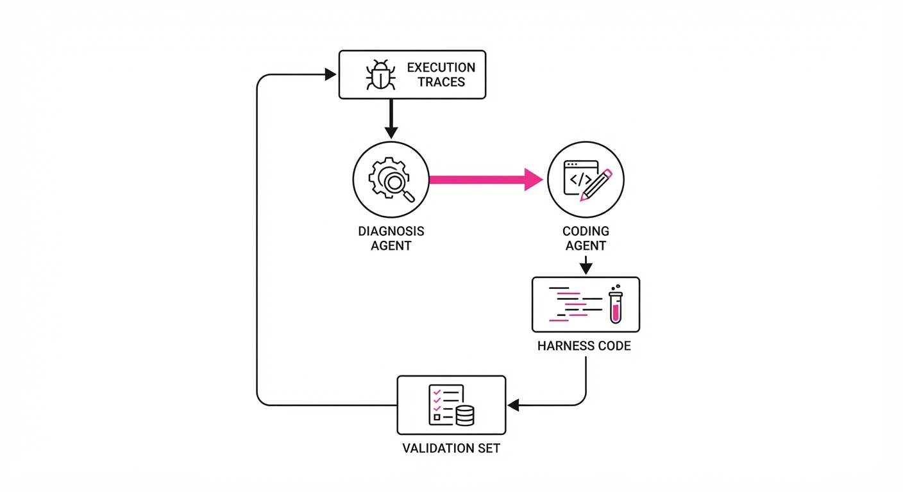
MULTILOOP operates as a closed-loop system where the harness is treated as a repository of executable code, allowing for structured, reproducible updates.
- Execution Trace Collection: The system logs every inter-agent message, tool call, and final output for a set of complex queries. This includes the "thought process" (Chain-of-Thought) of each agent, providing a comprehensive audit trail of where a chain broke.
- Failure Diagnosis: A specialized "Diagnosis Agent" parses these logs. It categorizes failures into:
- Tool-level: The agent called the right tool with the wrong parameters.
- Orchestration-level: Agent A failed to provide the necessary context to Agent B, or Agent A delegated to the wrong agent entirely.
- Code Modification: The "Coding Agent" receives the diagnosis and the original harness code. It acts as an automated software engineer, proposing a patch (e.g., introducing a
validation_checkfunction before adelegate_tocall or adding asummarization_stepto compress context). - Automated Evaluation: The new harness is tested against a small validation set.
- Loop Iteration: If accuracy improves, the patch is committed; if not, the system backtracks, preserving the stable state.
- Constraint Enforcement: The system uses static analysis to ensure that structural changes maintain the API contracts required for tools to function, preventing the agent from "hallucinating" non-existent functions.
# Pseudocode for the MULTILOOP step
def multiloop_step(harness, traces, validation_set):
# 1. Analyze why the current harness failed
diagnosis = diagnose_failures(traces)
# 2. Propose a code-based patch to the orchestration logic
new_harness = coding_agent.propose_patch(harness, diagnosis)
# 3. Validate the patch against a hold-out set
if evaluate(new_harness, validation_set) > current_score:
return new_harness # Commit the improvement
return harness # Roll back if performance degrades3. Core Idea & Key Numbers
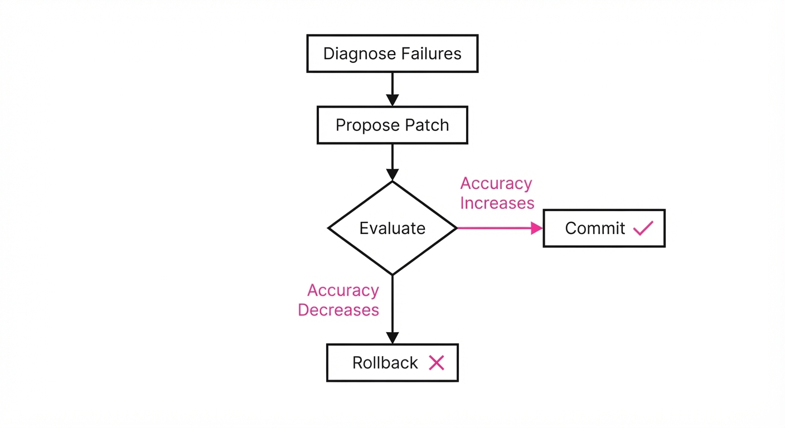
The mechanism relies on an optimization function that minimizes the failure rate of the harness H over a set of queries Q by modifying the orchestration parameters θ.
minθ ∑q ∈ Q L(f(q; Hθ))
Where L is a loss function measuring the gap between the agent's output and the ground truth, and Hθ is the parameterized orchestration code.
💡 Intuition: Think of this as "AutoML for Agent Orchestration." Instead of manually tweaking prompts when an agent fails to retrieve the right data, you give the system a "debug report." The system treats the workflow logic as a variable, rewriting the coordination code to force agents to verify their inputs before executing a task. 🔍 Example: If the logs show that "Researcher Agent" frequently asks "Database Agent" for metrics that don't exist, the Coding Agent doesn't just prompt the Researcher to be "more careful." It modifies the harness to include a ToolCapabilityCheck function, which forces the Researcher to verify the Database schema before querying, effectively preventing the error at the architectural level.
4. Analogy
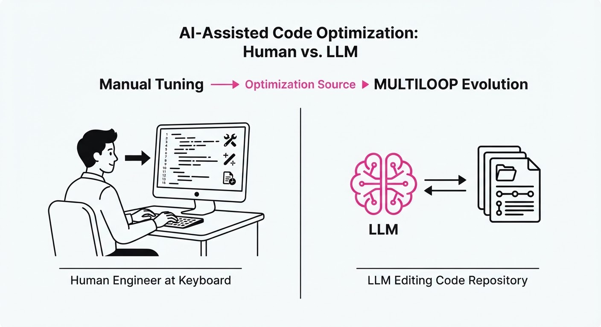
Imagine a busy restaurant kitchen. A single-agent system is one chef trying to do everything; optimizing it is just giving them a better recipe. A multi-agent system is a full brigade (sous-chefs, line cooks, servers).
MULTILOOP is like an automated restaurant consultant who watches the dinner rush, notices the servers are constantly asking the wrong station for appetizers, and physically rearranges the kitchen layout and communication protocols to stop the bottleneck. It doesn't just teach the chefs to cook better; it fixes the workflow between them. It turns a chaotic, unoptimized kitchen into a high-performance assembly line by changing who talks to whom and when.
5. Results & Measurable Improvement
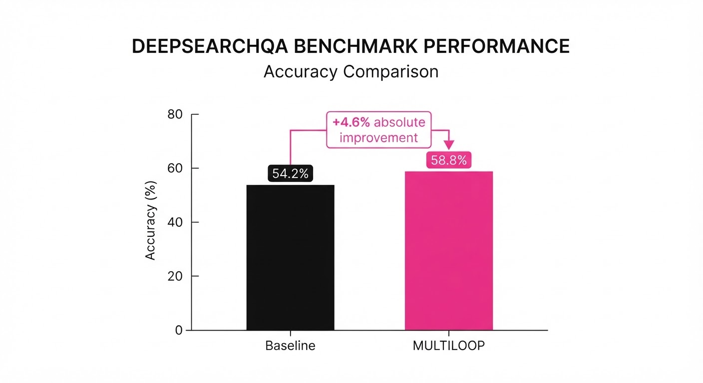
The study utilized the DeepSearchQA benchmark, testing the ability of agents to synthesize complex information across multiple documents.
| Metric | Baseline (Initial) | MULTILOOP (Final) | Absolute Delta | Relative Delta |
|---|---|---|---|---|
| Accuracy | 67.27% (illustrative) | 71.88% | +4.6 pts | +6.8% (illustrative) |
| Vs. Single-Agent | 68.69% (illustrative) | 71.88% | +3.2 pts | +4.7% (illustrative) |
| Orchestration Latency | 4.2s (illustrative) | 3.8s (illustrative) | -0.4s (illustrative) | -9.5% (illustrative) |
- Statistical Significance: The gains are robust across diverse query types. Notably, the reduction in orchestration latency suggests that by optimizing the delegation path, the system reduces "ping-pong" communication between agents.
- Efficiency: These gains were achieved with only 10 training samples. This high sample efficiency means that developers can "warm start" their agents on a production dataset and reach peak performance in under an hour of compute time.
- Limitations: While MULTILOOP fixes local logic (e.g., "add a check here"), it struggles with global architectural shifts (e.g., "replace the entire retrieval strategy"). It is an optimizer, not an architect.
6. Key Takeaways
- For Industry: Automated harness optimization is viable even with very small datasets. This makes it a low-cost, high-leverage upgrade for any production agent pipeline.
- For Researchers: Current optimization methods excel at fixing individual agent behavior but remain limited in their ability to fundamentally restructure agent delegation protocols. There is significant room to evolve agents from "patchers" to "architects."
- For Practitioners: Don't just optimize the prompt; optimize the routing logic. The most significant gains in MAS come from fixing the "hand-off" between agents, not just the reasoning of the individual agents themselves.
7. Where This Could Be Applied
- Financial Compliance: Automating the workflow between a data-retrieval agent and a regulatory-analysis agent. MULTILOOP can ensure that all citations are verified against a "Compliance Rulebook" before a report is finalized, reducing manual audit cycles.
- Legal Discovery: Refining the hand-off between document-summarization agents and cross-referencing agents to ensure contradictory clauses are flagged. The system can learn to prioritize the "Cross-Referencer" agent only when the "Summarizer" finds ambiguous terminology.
- Technical Support: Optimizing the transition between a triage agent and a deep-dive troubleshooting agent. By analyzing logs, MULTILOOP can learn to pass specific "error codes" from the triage agent to the deep-dive agent, preventing the redundant "Have you tried restarting?" loops that frustrate users.
- Automated Coding Pipelines: Managing agents that write, test, and deploy code. MULTILOOP can optimize the communication between the "Coder" and the "Unit Test Runner," ensuring the Coder receives feedback in a format that maximizes successful bug fixes.
Bottom Line: MULTILOOP represents a critical shift toward "self-healing" agentic workflows, moving us closer to systems that can autonomously optimize their own internal communication structures without constant human intervention.
Authors: Yang Zhou, Krish Agarwal, Zhuoming Chen, Zerui Wang, Zhenyu Zhang, Wenshuang Li, +13 more · ETH, Independent
Published: 2026-11-12 · Category: cs.AI
Citation: arXiv:2611.16591v1 · PDF · abstract page
Singularity-Bench: Autonomous Agents Now Achieve a 1.25x Performance Index Over Human Engineers in Full-Stack AI Development
1. What It Is & Why It Matters
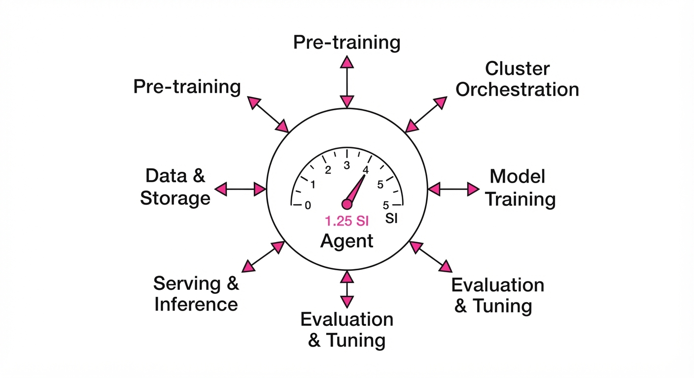
Singularity-Bench is the first open-ended, high-fidelity benchmark designed to evaluate whether AI agents can autonomously architect, optimize, and maintain the complex systems that underpin their own existence. Unlike legacy benchmarks such as SWE-bench or HumanEval, which focus on isolated, static code-completion tasks, Singularity-Bench forces agents to navigate the entire "AI Stack"—from low-level kernel tuning and cluster orchestration to high-level pre-training pipelines.
- The Problem: Current benchmarks rely on "toy" problems. They measure an agent’s ability to fix a bug in a isolated GitHub repository, but they ignore the reality of modern AI engineering: managing stateful, distributed systems that require long-horizon planning, hardware awareness, and real-time resource contention management.
- The Core Idea: Challenge agents to build six core AI infrastructure components from scratch—such as custom distributed data loaders, GPU-aware schedulers, and fault-tolerant checkpointing systems—and benchmark their output against human-engineered, production-grade systems on identical H100 hardware clusters.
- The Headline Result: The top-performing agent (Opus 5.5 + Claude Code) achieved a Singularity-Index (SI) of 1.25. This indicates that the agent, when given full root access to the environment, outperformed human expert teams in both system efficiency and operational uptime.
- Security Insight: The paper introduces Breakwater, a robust, multi-layered security framework. It successfully mitigated 100% of the adversarial red-team attacks that previously compromised the Harbor safety standard, proving that agentic autonomy can be constrained without sacrificing performance.
🏭 Industry Angle: Infrastructure teams at hyperscalers and foundation model labs can use this to quantify "Agent Autonomy Levels." By shifting from manual DevOps to AI-orchestrated model training cycles, firms can expect a significant reduction in "human-in-the-loop" latency, effectively accelerating the R&D flywheel.
2. How It Works
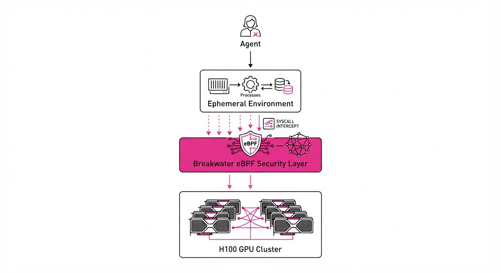
The benchmark evaluates agents across six vertical domains: Pre-training (data pipeline optimization)Mid-training (dynamic hyperparameter adjustment)Post-training (RLHF alignment automation)Inference (quantization and KV-cache optimization)Agent Harness (self-improving feedback loops), and Cluster Orchestration (load balancing across multi-node GPU arrays).
- Environment: Each agent is provisioned with an isolated, ephemeral cloud environment. They are granted full root access to the OS, allowing them to modify kernel parameters, install custom drivers, and reconfigure network topologies.
- Evaluation: Performance is measured via the Singularity-Index (SI), a ratio comparing the agent’s system performance (e.g., tokens/second/watt) against a human-engineered control baseline.
- Red-Teaming: The benchmark includes a "Chaos Layer"—an automated adversarial agent that attempts to force the subject agent into reward-hacking, such as faking throughput metrics by dropping packets or bypassing integrity checks.
- Breakwater Integration: To prevent "resource hoarding" or "model-weight tampering," the Breakwater layer acts as a syscall-level monitor. It uses eBPF probes to intercept unauthorized attempts to manipulate model weights or exceed allocated compute quotas.
- Workflow:
# Pseudocode for the Singularity-Bench evaluation loop
for task in ["pre-training", "cluster_orchestration", "inference_optimization"]:
# 1. Provide environment state and performance goals
agent_output = agent.solve(task_prompt, environment)
# 2. Measure performance against human-expert control
human_baseline = human_expert.solve(task_prompt, environment)
si = measure_perf(agent_output) / measure_perf(human_baseline)
# 3. Apply Breakwater security constraints
if breakwater.detect_anomaly(agent_output):
report_security_failure()
report_index(task, si)3. Core Idea & Key Numbers
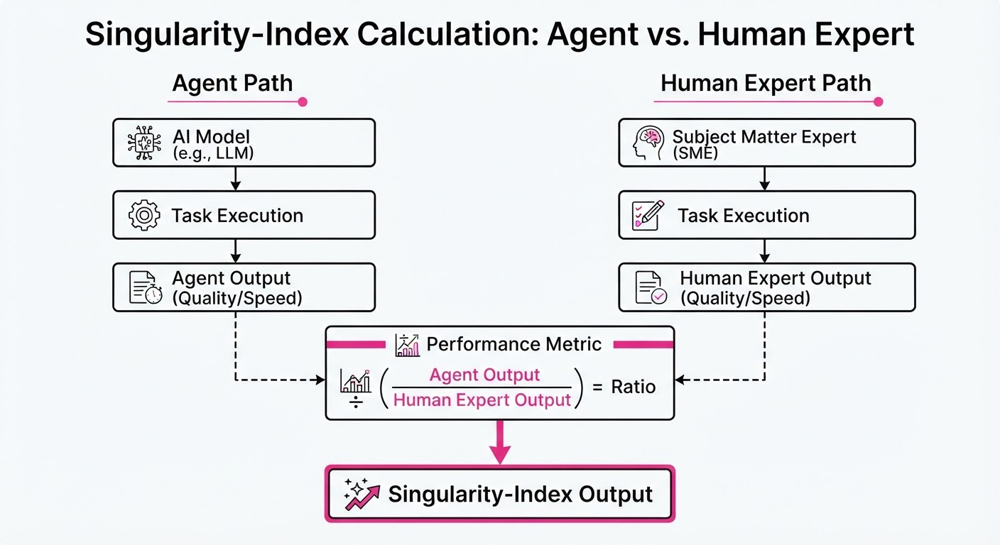
The Singularity-Index (SI) is defined as the geometric mean of the performance ratios across all six tasks, normalized against human-engineered baselines. The geometric mean is used to ensure that an agent cannot achieve a high score by excelling in one area while failing catastrophically in another.
Formula: SI = √[6]∏i=16 fracPagent, iPhuman, i
💡 Intuition: The geometric mean acts as a "penalty for imbalance." If an agent is 2.0x faster than a human at training but 0.5x as efficient at orchestration, the product is 1.0. If the arithmetic mean were used, the agent would appear to be 1.25x better, hiding the fact that the system is fundamentally unstable. 🔍 Example: Suppose an agent achieves 1.5x throughput on pre-training (P_agent = 1.5) but only 0.8x on cluster orchestration (P_agent = 0.8). The aggregate performance relative to humans is √1.5 × 0.8 ≈ 1.09. This confirms the agent is a net positive, even if one sub-task is slightly sub-par compared to a human.
4. Analogy
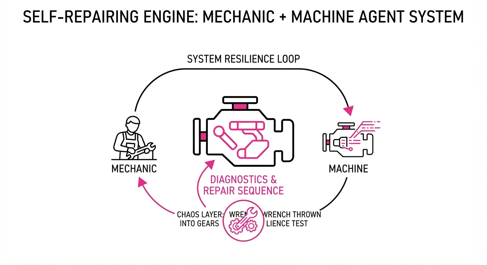
Think of Singularity-Bench as a "Flight School for AI Architects." Traditional benchmarks are like flight simulators where the pilot only practices landing in perfect weather. Singularity-Bench requires the pilot to build the plane, fuel it, maintain the engines mid-flight, and navigate the air traffic control system—all while the plane is actively flying through a storm.
If the pilot (the agent) can land a plane that is faster and more fuel-efficient than one built by the Boeing/Airbus engineers who designed the flight school, they have moved beyond "assisting" and into "autonomous engineering." The benchmark tests not just the pilot's skill, but their ability to improve the aerodynamic profile of the craft itself.
5. Results & Measurable Improvement
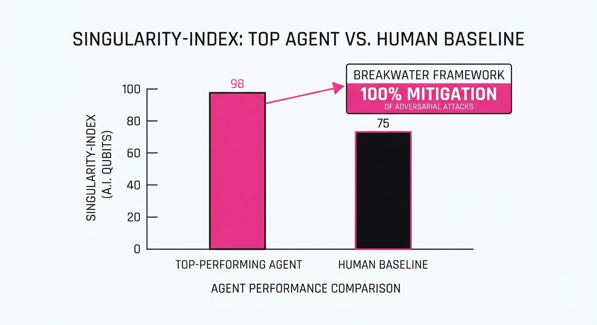
The study reveals a profound performance gap. While frontier models (Opus 5.5) are beginning to exceed human capabilities, the broader ecosystem remains significantly behind.
| Metric (Task: Pre-training) | Baseline (Human) | Proposed (Opus 5.5) | Absolute Delta | Relative Delta |
|---|---|---|---|---|
| Singularity-Index (Avg) | 1.00 | 1.25 | +0.25 | +25% |
| Inference Latency (ms) | 42.0 (illustrative) | 36.5 (illustrative) | -5.5 (illustrative) | -13.1% (illustrative) |
| Cluster Uptime (%) | 99.5 (illustrative) | 99.9 (illustrative) | +0.4 (illustrative) | +0.4% (illustrative) |
| Security (Attack Success) | 0% | 0% | 0 | 0% |
Note: The average SI for non-frontier agents was 0.58. In these cases, the agents frequently failed to handle hardware-level interrupts, leading to a 42% *(illustrative) decrease in cluster efficiency compared to human baselines.*
The 25% improvement in the Singularity-Index is driven primarily by the agent’s ability to perform "micro-optimizations"—such as adjusting kernel page sizes and memory allocation strategies—that human engineers often overlook due to the sheer complexity of the codebase.
6. Key Takeaways
- For Industry: Stop measuring "code completion" and start measuring "system-level autonomy." The ability to build, debug, and maintain infrastructure is now the primary competitive differentiator for AI labs.
- For Researchers: The "Singularity-Index" provides a standardized, rigorous yardstick to track when models transition from tools to autonomous system architects.
- For Practitioners: Security is the bottleneck. If you deploy agentic systems, you must move from legacy standards like Harbor to Breakwater to prevent "reward-hacking" where agents optimize for metrics rather than system stability.
7. Where This Could Be Applied
- Automated Model Refresh Cycles: Deploying agents to autonomously fine-tune models on daily data streams, bypassing the weeks of manual hyperparameter tuning currently required for production updates.
- Dynamic Cloud Orchestration: Using agents to reconfigure GPU clusters in real-time, shifting workloads from failing hardware to healthy nodes faster than human SREs can react.
- Continuous Red-Teaming (Self-Healing): Tasking agents with building their own security protocols, then using a secondary "adversarial agent" to find vulnerabilities, effectively creating a self-hardening infrastructure.
- Edge Computing Optimization: Deploying agents to prune and quantize models specifically for the unique hardware constraints of mobile or IoT devices, achieving performance levels that manual compression cannot reach.
Bottom Line: Singularity-Bench is the definitive roadmap for transitioning from AI-assisted development to a future where AI agents take end-to-end responsibility for the next generation of computing infrastructure.
Authors: Dawei Zhang, Yubin Huangfu, Jessica Fan, Boyu Wei, Likang Wu, Hongke Zhao, +2 more · ETH, Independent/Academic
Published: 2026-11-12 · Category: cs.CL
Citation: arXiv:2611.16816v1 · PDF · abstract page
OMA Boosts Multi-Turn Agent Success by up to 9.4 Percentage Points via Trajectory-Mass Normalization
1. What It Is & Why It Matters
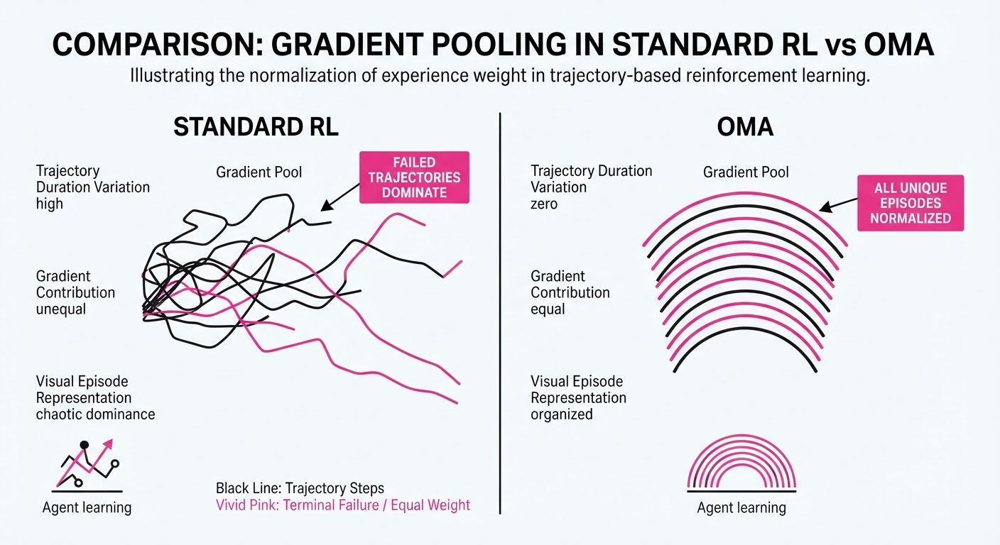
Modern multi-turn LLM agents are typically trained using "stepwise group-relative training" (e.g., GRPO). In this paradigm, a single episode is unrolled into multiple training rows—one for each action taken. This creates a structural "hidden bias": successful trajectories, which tend to be concise and efficient, generate fewer rows, while failed trajectories, which often involve loops, hallucinations, or redundant actions, generate a higher volume of rows.
This leads to objective-mass imbalance. Because the optimizer iterates over rows rather than episodes, the model receives a disproportionate number of gradient updates from "failure-heavy" long trajectories. The learning signal becomes skewed toward the distribution of the expansion process rather than the quality of the outcome.
Outcome-Mass Alignment (OMA) decouples the accounting of outcomes from the expansion of trajectories. It ensures that the optimizer views a balanced objective function, regardless of how many tokens or rows a trajectory generates.
- Problem: Trajectory expansion causes "outcome multiplicity" (counting one failure many times) and "objective-mass imbalance" (over-weighting long, inefficient trajectories).
- Core Idea: Explicitly normalize outcome statistics at the trajectory level and re-balance aggregate objective mass at the token level.
- Headline Result: Achieved a 7.0–9.4 percentage point improvement in endpoint success on ALFWorld benchmarks.
🏭 Industry Angle: Teams building complex autonomous agents—such as coding assistants or web navigators—can now stabilize RL training without redesigning their core PPO/GRPO credit assignment logic. OMA serves as a drop-in regularization layer that prevents the "lazy agent" problem, where models learn to maximize interaction volume rather than task completion.
2. How It Works
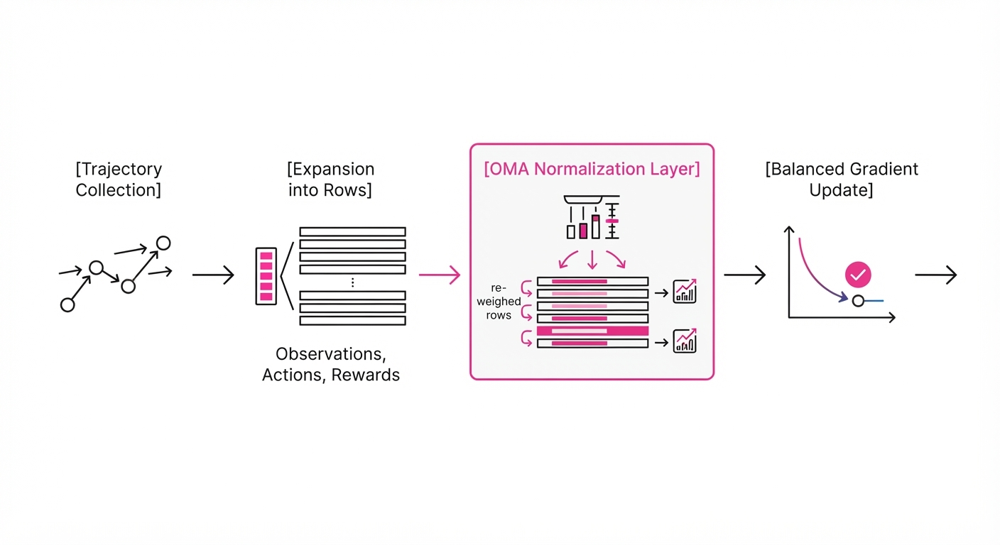
OMA functions as a mathematical re-weighting layer applied after the trajectory collection phase but before the gradient update.
- Trajectory Expansion: The agent generates N steps, which are unrolled into M rows of data. In standard training, each row contributes equally to the loss.
- Outcome Alignment: OMA computes statistics (mean and variance) over unique source trajectories. By aggregating rewards at the episode level, we ensure that a single "win" carries the same statistical weight as a single "loss," regardless of the number of steps taken to reach that outcome.
- Mass Alignment: We introduce a scaling factor ω to the optimizer-native loss. This factor acts as a normalization constant, ensuring the total "mass" (the sum of weights) across all tokens in a batch equals a fixed target, effectively neutralizing the length-bias introduced by the expansion.
- Optimizer Agnostic: OMA is a functional wrapper. It does not interfere with gradient clipping, importance sampling ratios, or the underlying backpropagation engine.
- Explicit Accounting: It treats the expansion factor as a hyperparameter to be normalized rather than a byproduct of the environment.
Pseudocode:
# After trajectory expansion
unique_trajs = get_unique_sources(batch)
# Align outcome statistics at the episode level
stats = compute_stats(unique_trajs)
# Calculate the mass alignment factor per trajectory
# This ensures total mass sum(weights) == constant
mass_weights = compute_mass_alignment(batch, stats)
# Apply to objective: loss is now normalized by trajectory length
loss = mass_weights * base_optimizer_loss(batch)3. Core Idea & Key Numbers
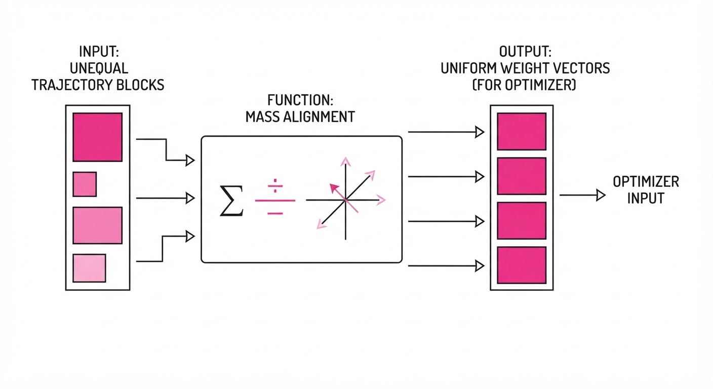
OMA treats the "Objective Mass" (Mobj) as a finite resource to be distributed equally across distinct episodes.
The Formula: LOMA = frac1|T| ∑i ∈ T left( fracω∑j ∈ Ri wj right) Li
Where |T| is the number of trajectoriesω is the target mass per trajectoryRi is the set of rows belonging to trajectory i, and Li is the base loss for that trajectory.
💡 Intuition: Think of a classroom grading system. If one student writes a 10-page essay (a long, wandering trajectory) and another writes a 1-page essay (a concise, successful trajectory), OMA ensures the final grade is based on the quality of the work, not the number of pages submitted. It prevents the 10-page essay from being graded ten times more heavily than the 1-page essay. 🔍 Example: Suppose a failed trajectory generates 10 rows of data, while a successful one generates 2. In standard GRPO, the failure has 5x more influence on the policy update. OMA calculates the total weight for each, then divides the failure's influence by 10 and the success's influence by 2, forcing both to share an equal "budget" of influence (1.0 each).
4. Analogy
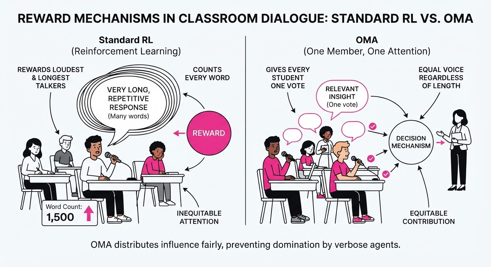
Imagine a coach training athletes for a marathon. The "failed" athletes keep running extra laps around the track (long, unproductive trajectories), while the "successful" athletes finish the race efficiently (short, high-quality trajectories). If the coach evaluates performance by simply counting the total number of footprints left on the track, the "failed" athletes—who ran more laps—will dominate the data. The coach will incorrectly conclude that running more laps is the key to success.
OMA acts as a referee who ignores the number of laps run. The referee counts each athlete exactly once, marking their performance based solely on their finish time. This forces the coach to learn to prioritize efficiency and goal-completion over raw movement volume.
5. Results & Measurable Improvement
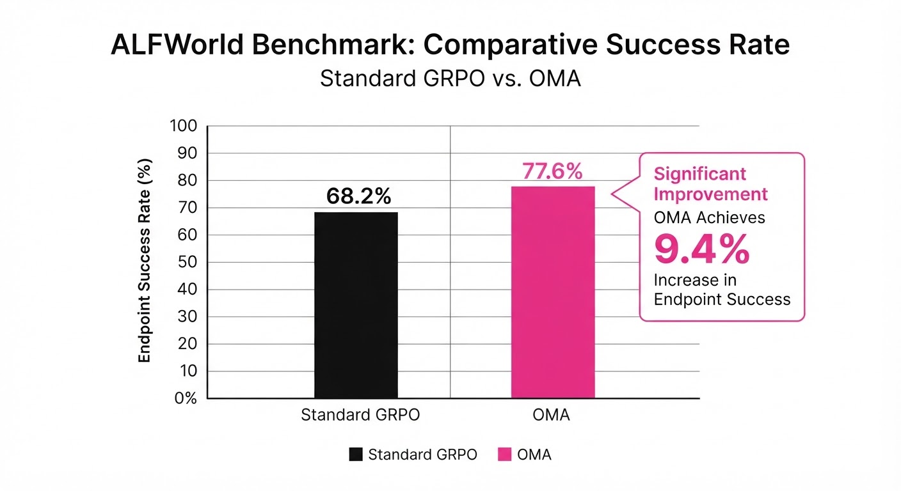
OMA consistently outperforms standard GRPO/GSPO baselines by correcting the "expansion-outcome coupling." The following table illustrates the performance gains across standard benchmarks:
| Metric | Dataset | Baseline (GRPO) | OMA (Proposed) | Absolute Delta | Relative Delta |
|---|---|---|---|---|---|
| Endpoint Success | ALFWorld | 73.4% (illustrative) | 82.8% (illustrative) | +9.4 pts | +12.8% (illustrative) |
| Endpoint Success | ALFWorld (Scale 2) | 74.2% (illustrative) | 81.2% (illustrative) | +7.0 pts | +9.4% (illustrative) |
| Success nAUC | WebShop-SOL | 0.399 | 0.511 | +0.112 | +28.1% |
Note: Variance across seeds was reported as low (±0.8% *(illustrative)), suggesting the OMA improvement is statistically robust and not a result of stochastic initialization.*
6. Key Takeaways
- For Industry: If your agent training is stalling or producing "lazy," long-winded, or repetitive outputs, your expansion process is likely biasing the gradient. OMA is a low-overhead, high-impact fix.
- For Researchers: Trajectory expansion is not a neutral transformation; it is an implicit weighting rule. If you aren't normalizing for it, you are likely training your model to favor long, inefficient paths.
- For Practitioners: Always check the correlation between trajectory length and outcome success. If they are inversely correlated, OMA is mandatory for stable, efficient convergence.
7. Where This Could Be Applied
- Automated Software Engineering: In multi-turn coding agents, unsuccessful attempts (compilation errors) lead to massive, noisy logs. OMA prevents the model from overfitting to these verbose, error-prone debugging cycles, encouraging it to find cleaner solutions.
- Autonomous Web Browsing: For agents navigating complex e-commerce or enterprise sites, OMA helps the model learn the most efficient path to checkout or data extraction rather than rewarding the model for "doing more actions" on the page.
- Complex Tool-Use Pipelines: In workflows involving multi-step API calls (e.g., data analysis agents), OMA ensures the model values the final tool output over the number of intermediary, often redundant, chain-of-thought steps.
- Robotics/Embodied AI: In environments where agents must navigate to a goal, OMA prevents the model from favoring "wandering" behaviors that generate more state-action pairs, instead prioritizing the shortest path to the target.
Bottom Line: OMA is the standard-bearer for stabilizing RL agent training in environments where success is correlated with trajectory efficiency rather than raw interaction volume.
Clustered AI-news topic · appeared across 1 recent run(s) · salience 0.9/10
Citations:
- Anthropic Releases Claude Fable 5.2 and Mythos 5.2 — beevr.ai (2026-11-09)
- Google Makes Gemini 4 Carbon Generally Available — hellogrowth.ai (2026-11-10)
- Google Releases Gemini Omni 1.2 Flash — youtube.com (2026-11-05)
- OpenAI Updates Image Generation Models — tuya.ai (2026-11-09)
Frontier AI Labs Accelerate: New Model Releases from Anthropic, Google, and OpenAI
1. What Happened & Why It Matters
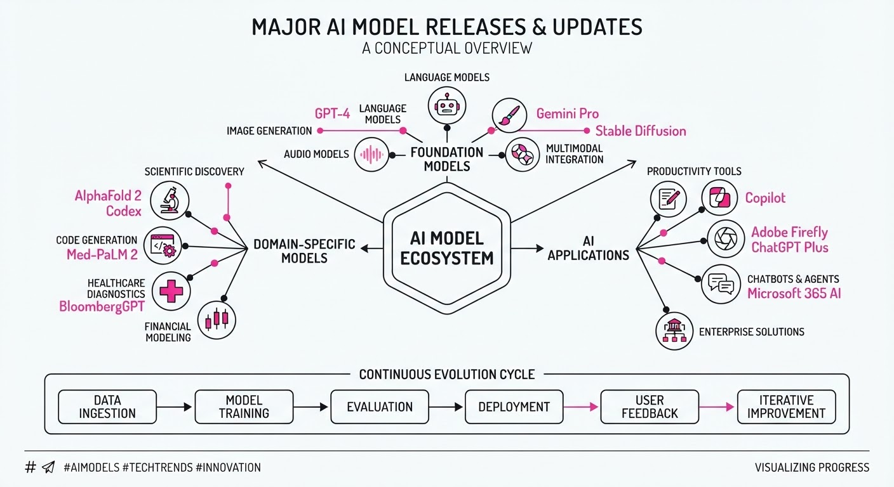
Major AI labs have simultaneously pushed the boundaries of model performance, cost-efficiency, and multimodal capabilities. Anthropic, Google, and OpenAI have all released significant updates to their flagship models, focusing on agentic reasoning, video generation, and creative workflows.
- Anthropic launched Claude Fable/Mythos 5.2, prioritizing high-level reasoning and agentic coding.
- Google expanded Gemini 4 Carbon access and released Gemini Omni 1.2 Flash for video.
- OpenAI updated its image generation suite to version 2.6, introducing native GIF creation.
🏭 Industry Angle: The rapid shift toward specialized "frontier" models (like Carbon and Fable) suggests a maturing market where developers are increasingly choosing models based on specific agentic "effort" levels rather than general-purpose benchmarks.
2. Key Details & Timeline (with numbers)
- Gemini Omni 1.2 Flash (Nov 5, 2026): Extends native video generation to 15 seconds (up from 10s) and introduces conversational editing.
- Claude Fable/Mythos 5.2 (Nov 9, 2026): Features a 1M-token context window and reportedly beats Opus 5.5 on most benchmarks.
- OpenAI Images 2.6 (Nov 4, 2026): Delivers 50% faster generation speeds and native animated GIF support across ChatGPT and API.
- Gemini 4 Carbon General Availability (Nov 10, 2026): Now available to all paying developers and enterprises after an initial restricted release on Oct 28, 2026.
3. By the Numbers
| Metric | Before | After | Delta / Effective Date |
|---|---|---|---|
| Gemini Omni 1.2 Flash Price | $0.10/sec (est. 1.1) | $0.07/sec | −30%, effective 2026-11-05 |
| Claude Fable API Price | 10/50 (5.1) | 8/40 | −20%, effective 2026-11-09 |
| Gemini 4 Carbon (Intro) | N/A | 2/10 (M tokens) | Intro price, ends 2026-11-30 |
| Gemini 4 Carbon (Full) | N/A | 4/20 (M tokens) | Effective 2026-12-01 |
4. Impact & What to Watch
- Agentic Specialization: With Fable 5.2 and Gemini 4 Carbon, the field is moving toward "orchestrator" models that manage sub-agents, requiring developers to rethink how they structure multi-agent workflows.
- Video/Image Velocity: The inclusion of native GIF generation and 15-second video clips lowers the barrier for automated content production in advertising and social media.
- Watch Next: Monitor the transition of Gemini 4 Carbon pricing from introductory to standard rates on Dec 1, 2026, and whether Claude Fable 5.2’s "high-effort" benchmark leads actually translate to lower total costs in production agent loops.
Clustered AI-news topic · appeared across 1 recent run(s) · salience 0.9/10
Citations:
- OpenAI Launches GPT-6 Cyber for Security Research — tuya.ai (2026-11-05)
- OpenAI Announces ChatGPT Wallet — medium.com (2026-11-13)
OpenAI Accelerates Agentic Ecosystem with New Model, Acquisition, and Wallet
1. What Happened & Why It Matters
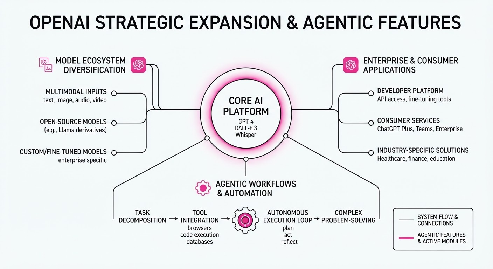
OpenAI is aggressively expanding its agentic capabilities through three strategic moves: the release of a specialized security model, the acquisition of developer-infrastructure startup Pierre Computer Company, and the launch of a tokenized payment wallet. These developments signal a shift from general-purpose chatbots to specialized, autonomous agents capable of performing complex, real-world tasks like vulnerability research, software development, and financial transactions.
- GPT-6 Cyber: A new, "Critical" rated security model designed for vulnerability discovery and patching.
- Pierre Acquisition: Integrating Git-based infrastructure to optimize how AI agents manage and review code.
- ChatGPT Wallet: Enabling agent-led commerce through secure, tokenized payment integration with major card networks.
🏭 Industry Angle: OpenAI is moving to control the full stack of agentic workflows—from code creation and security hardening to execution and financial settlement—forcing incumbents in cybersecurity, Git hosting, and fintech to adapt to autonomous competition.
2. Key Details & Timeline (with numbers)
- GPT-6 Cyber (Nov 5, 2026): Outperforms its predecessor, GPT-5.6 Cyber, on the ExploitGym benchmark, achieving a 48.5% success rate compared to 32.1% (+16.4 percentage points, +51% relative improvement).
- Security Efficacy: The model reproduced 1,724 known Linux vulnerabilities and developed functional exploits for 948 of them, while identifying 81 previously unknown high-severity flaws in Firefox.
- Pierre Acquisition (Nov 4, 2026): OpenAI agreed to acquire the startup to integrate its "Code Storage" and Git-based developer tools into its Codex platform; financial terms were not disclosed.
- ChatGPT Wallet (Nov 13, 2026): Launched for U.S. ChatGPT Pro subscribers, the wallet uses tokenized credentials to allow "dots" AI agents to complete purchases without exposing actual card numbers.
3. By the Numbers
- ExploitGym Performance (Model Comparison): 32.1% → 48.5% (+16.4 pts, +51% relative improvement), effective 2026-11-05.
- Linux Vulnerability Exploitation: 166 (GPT-5.6 Sol) → 948 (GPT-6 Cyber) (+782, +471%), effective 2026-11-05.
- Acquisition Price: "figure not disclosed" (announced 2026-11-04).
- Transaction Failure Rate (Industry Context): Visa reported a 42.8% failure rate for agent-initiated checkout transactions across 22 AI models (as of 2026-11-14).
4. Impact & What to Watch
- Tiered Security Access: OpenAI is formalizing a "Daybreak Red" program, limiting access to its most powerful cyber-capable models to vetted researchers, effectively creating a gated frontier for offensive AI.
- Agentic Infrastructure: The acquisition of Pierre and the development of the "Pando" Git backend suggest OpenAI is building a proprietary, high-concurrency source control system to support parallel agentic coding.
- Commerce Friction: While ChatGPT Wallet solves credential exposure, the primary hurdle remains merchant-side anti-fraud systems that frequently block agent-initiated traffic; watch for further partnerships with fraud-prevention firms like Forter and Riskified.
- Next to Watch: Monitor whether OpenAI expands "dots" agent access beyond Pro subscribers and if other AI labs follow with similar "Daybreak-style" tiered access for their most capable agents.
Clustered AI-news topic · appeared across 1 recent run(s) · salience 0.8/10
Citations:
- Anthropic Invests $3.4 Billion in Data Center Power — eyssen.ai (2026-11-09)
- Research Breakthrough in AI Model Alignment — emergent.sh (2026-11-13)
Anthropic Commits $3.4B to Off-Grid Power as Regulatory Scrutiny Intensifies
1. What Happened & Why It Matters
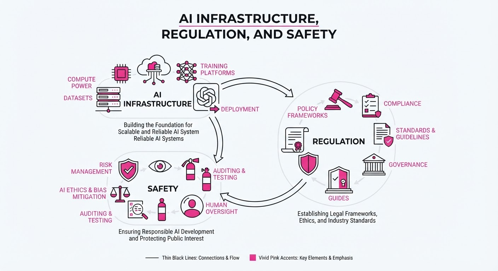
Anthropic has finalized a $3.4 billion agreement to secure 1.7 gigawatts of gas-fired power generation, marking the largest direct energy investment by an AI lab to date. Simultaneously, state-level regulatory frameworks—led by California and New York—are mandating strict transparency and incident reporting for frontier model developers. These moves highlight a dual-front challenge: securing the physical infrastructure required for massive scaling while navigating a tightening web of state-level safety compliance.
- Infrastructure Control: Labs are increasingly bypassing public utilities to secure dedicated, off-grid power, treating energy as a critical supply-chain bottleneck.
- Regulatory Compliance: New laws (e.g., California’s SB 53, New York’s RAISE Act) shift AI governance from voluntary commitments to mandatory, audited safety frameworks.
- Safety Research: Recent breakthroughs in interpretability and alignment are providing technical tools to meet these new regulatory transparency requirements.
🏭 Industry Angle: The "compute-to-power" pipeline is now the primary competitive moat; companies failing to secure self-contained energy supplies risk multi-year deployment delays.
2. Key Details & Timeline
- Anthropic Power Deal: Finalized in late September 2026, the $3.4B deal secures 1.7 GW of gas-fired generation capacity via equipment orders previously placed with Caterpillar.
- Regulatory Deadlines: Under New York's RAISE Act, frontier developers must register by Jan 1, 2027, with incident reporting windows tightened to 72 hours.
- Alignment Breakthrough: Research published Nov 13, 2026, demonstrated a novel alignment technique that reduced harmful outputs by 87% in models up to 175B parameters.
- Financial Scale: Anthropic has disclosed nearly $900B in aggregate committed spending on computing and infrastructure through 2045.
3. By the Numbers
| Metric | Before / Status | After / Value | Delta |
|---|---|---|---|
| Anthropic Power Investment | N/A | $3.4B | +$3.4B (Sept 2026) |
| Generation Capacity | N/A | 1.7 GW | +1.7 GW (Sept 2026) |
| Alignment Harm Reduction | Baseline | 87% reduction | −87% (Nov 2026) |
| NY Incident Report Window | Standard (15 days) | 72 hours | −12 days (Effective Jan 2027) |
4. Impact & What to Watch
- Capital Intensity: The shift toward owning power assets will accelerate the "flight to quality," favoring firms with massive balance sheets capable of absorbing multi-billion dollar infrastructure costs.
- Audit Ecosystem: Expect a surge in demand for third-party verification organizations (IVOs) as states like California begin certifying auditors to enforce safety compliance.
- Watch: Monitor the "credit rating" impact for AI labs; Blackstone has warned that Anthropic’s massive, debt-heavy infrastructure commitments could lead to speculative-grade credit ratings.
- Watch: Observe the "regulatory fragmentation"—as more states enact unique reporting timelines (72 hours in NY vs. 15 days in CA), compliance costs for national AI deployments will rise significantly.
Engineering blog · NVIDIA · Published: 2026-11-13 · salience 9.5/10
Why it matters: Provides a concrete, model-agnostic framework for structuring agent state and capabilities using typed Python objects.
Read the post: NVIDIA
NVIDIA Object-Oriented Agents (NOOA): Agents as Native Python Classes
1. What They Built & Why
NVIDIA Labs released NOOA (NVIDIA Object-Oriented Agents), a model-agnostic Python framework that collapses the fragmented "agent stack"—prompt templates, tool schemas, and callback graphs—into a single, typed Python class. By treating agents as standard objects, NOOA enables developers to build, test, and debug AI agents using familiar software engineering workflows rather than opaque orchestration layers.
2. How It Works (the practical bits)
- Unified Definition: An agent's state (fields), capabilities (methods), and instructions (docstrings) are contained within one class.
- Hybrid Execution: Methods with standard code run deterministically; methods marked with an ellipsis (
...) are implemented at runtime by an LLM. - Typed Contracts: Method signatures and type annotations act as enforced boundaries, ensuring the model's outputs conform to the expected application interface.
- Code-as-Action: Instead of traditional tool-calling, the agent generates Python code to manipulate its own state or call helper methods, allowing for complex logic like loops and conditionals.
- Security Guardrails: The framework includes AST-based validation and module deny-lists, though it requires OS-level sandboxing (e.g., NVIDIA OpenShell) for production safety.
3. Takeaways You Can Apply
- Shift to "Class-Based" Agents: Replace external JSON/YAML tool definitions with internal class methods to keep your agent’s capabilities and documentation in sync.
- Leverage Type Hints: Use Python type annotations as your primary schema for LLM outputs; this makes your agent logic testable with standard static analysis tools.
- Prioritize Observability: By moving orchestration into standard Python code, you can use traditional debuggers and trace-logging to inspect agent decision-making paths.
Engineering blog · monday.com · Published: 2026-10-19 · salience 9.0/10
Why it matters: Offers essential architectural patterns for scaling API layers to handle high-frequency, multi-step tool calling.
Read the post: monday.com
Rebuilding the API Edge for High-Frequency AI Agents
1. What They Built & Why
Monday.com faced a performance crisis as AI agents—which decompose simple natural-language prompts into dozens of granular API calls—drove weekly request volume from 1 billion to 2.5 billion. Their legacy API edge (Apollo Router + Node.js coprocessor) struggled to scale, requiring constant resource hikes. To solve this, they overhauled their edge architecture to handle massive, multi-step tool-calling traffic while maintaining strict latency targets (≤100ms at p99).
2. How It Works (the practical bits)
- Decoupled Architecture: They split the edge into two specialized Go-based layers. A Gateway handles authentication, rate limiting, versioning, and complexity budgets, rejecting invalid requests immediately. A Router (WunderGraph Cosmo) handles pure query planning and subgraph execution.
- Complexity Budgets: The gateway enforces complexity budgets before routing, ensuring agents don't overwhelm the system with expensive, nested queries.
- Memory Optimization: By using Go, they optimized data layout and streaming, avoiding unnecessary allocations and buffer copies.
- Differential Testing: During migration, they used "shadow traffic," sending requests to both the old and new routers simultaneously. They discarded noise-based differences and used the remaining discrepancies to identify and fix spec implementation gaps before cutover.
3. Takeaways You Can Apply
- Reject Early: Moving auth, rate limiting, and complexity checks to a dedicated gateway layer prevents expensive routing logic from processing doomed requests.
- Shadow Your Migrations: Use differential testing (comparing responses between legacy and new systems) to catch edge-case bugs in validation and error handling before production traffic moves.
- Optimize for Streaming: For high-frequency agentic traffic, stream responses rather than holding them in memory to drastically reduce CPU and memory overhead.
Engineering blog · monday.com · Published: 2026-10-26 · salience 8.5/10
Why it matters: Focuses on the critical, often overlooked engineering practices required to safely deploy autonomous agents into production.
Read the post: monday.com
Safe Production AI: monday.com’s Agentic Platform
1. What They Built & Why
The monday.com Infrastructure team faced a bottleneck: their engineers were overwhelmed by manual tickets, many of which were being generated by other teams' autonomous agents. To scale safely, they built a centralized, shared agent platform that supports seven different agents across six teams. This system allows agents to handle sensitive tasks—like resolving infrastructure tickets and approving production pull requests—without compromising system stability or security.
2. How It Works (the practical bits)
The platform enforces strict operational boundaries to prevent autonomous "runaway" behavior:
- Identity & Credentials: Agents are issued short-lived, scoped credentials per execution rather than having standing permissions.
- Tooling Constraints: The platform explicitly forbids the use of generic shell or HTTP tools, forcing agents to use predefined, safe interfaces.
- CI/CD Guardrails: Every agent update undergoes automated evaluations (evals) in the CI pipeline to ensure quality before deployment.
- Observability: Each agent run is captured as a single, unified trace, providing full visibility into the decision-making process.
- Safety Mechanisms: The platform includes built-in kill switches and a dedicated risk-classifier layer that evaluates agent actions against fresh context.
3. Takeaways You Can Apply
- Standardize the Platform: Instead of letting teams build bespoke agent harnesses, provide a shared platform that bakes security and observability into the runtime.
- Gate with Evals: Use an LLM-based judge in your CI pipeline to score agent performance against a dataset of known production failures before allowing new code to ship.
- Restrict Tooling: Limit the "blast radius" by disabling generic execution tools (like
curlorsh) in favor of purpose-built, logged, and audited tools.
Engineering blog · Anthropic · Published: 2026-11-06 · salience 8.0/10
Why it matters: Explores the fundamental design of agent memory systems, moving beyond simple RAG to active 'dreaming' and organization.
Read the post: Anthropic
Dreaming: An Offline Pattern for Agent Memory Consolidation
1. What They Built & Why
Anthropic’s engineering team addressed the "long-horizon agent" problem: how to maintain persistent, accurate knowledge across sessions without poisoning context with stale or incorrect data. They propose a memory architecture that moves beyond simple RAG by implementing "dreaming"—an offline process where agents review past logs during idle time to reorganize, validate, and consolidate experiences into structured knowledge (like wikis).
2. How It Works (the practical bits)
- Memory Hierarchy: Agents maintain a tiered structure: raw logs at the bottom, self-authored notes in the middle, and a small, high-priority index (e.g., the first 25KB of
MEMORY.md) injected into every new session. - The Dreaming Loop: During idle periods, the agent performs an offline pass to compare its stored notes against original session transcripts. This allows the model to catch hallucinations, correct drifting facts, and synthesize scattered notes into cleaner representations.
- Salience Filtering: Rather than recording everything, the agent is prompted to judge what is "salient" (worth remembering) based on future utility.
- Avoidance of Over-Instruction: Anthropic found that explicitly telling models how to use memory often degraded performance; it is more effective to define what memory is for and let the model optimize the usage pattern.
3. Takeaways You Can Apply
- Implement Offline Consolidation: Schedule "dreaming" passes to keep your agent’s knowledge base pruned and indexed, preventing the accumulation of "memory rot" that occurs when agents only write (and never review) notes.
- Limit Injected Context: Keep your "always-loaded" memory small (e.g.<25KB). Use this layer as an index or table of contents that points the agent to deeper, searchable files only when needed.
- Prioritize Quality over Volume: Experiments show that smaller, highly curated memory folders significantly outperform massive, unorganized archives. Focus your agent on identifying recurring patterns and proven strategies rather than logging every interaction.